Moldura na Câmera – Teste Vídeo MP4

Abrir câmera
Tirar foto
Gravar vídeo
Parar vídeo
Back‑end MP4 ligado no Railway
Foto já sai com a moldura. No vídeo, por enquanto é só para testar a conversão para MP4 – depois a gente encaixa essa lógica dentro do seu index oficial. 💛